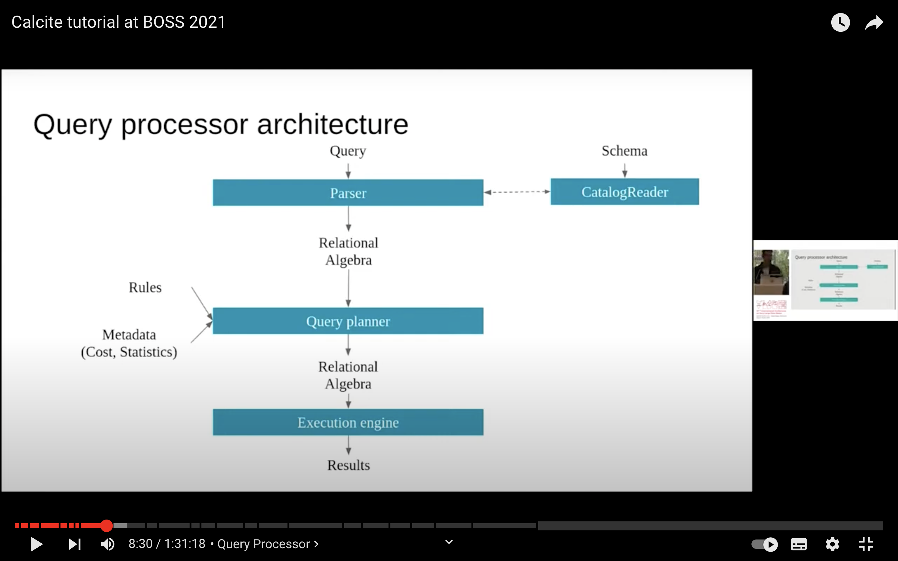
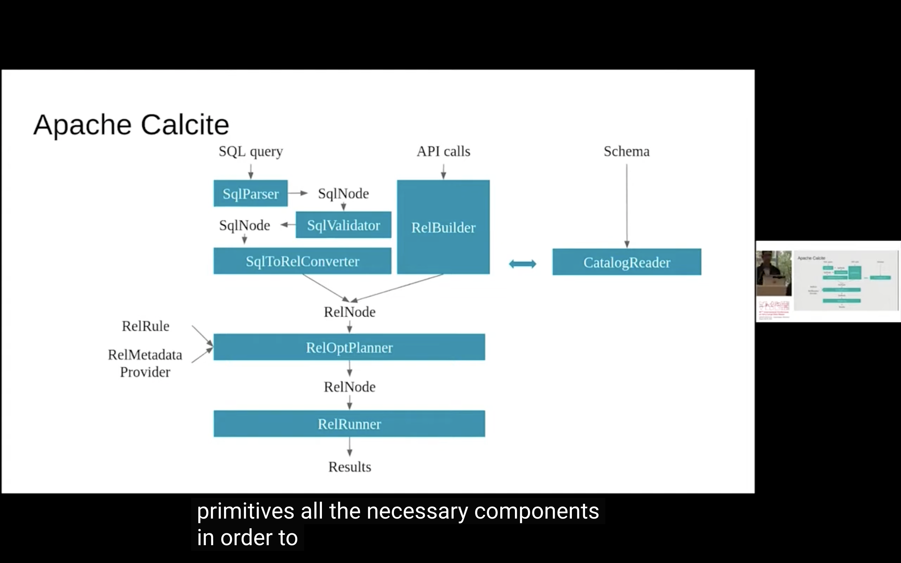

主要功能
- 标准的SQL解析，校验以及提供JDBC驱动
- 将SQL转换为关系代数，基于成本模型进行优化
- 适配第三方数据源
官方文档
https://calcite.apache.org/docs/
Apache Calcite 定位是一款动态数据管理框架。数据库管理系统的很多功能它都具备，但是有几个功能是它不具备的 1. 数据存储 2. 数据处理算法 3. 元数据管理
Calcite本身的定位就是脱离数据存储和处理，它其实可以作为应用与数据存储，数据处理引擎之间的媒介(但是感觉和ORM又完全不同)，它也可以作为构建数据库的基础。
Calcite可以处理任何数据源，任何数据格式。只要写一个适配器告知Calcite哪些集合可以视为一张表，就可以将这些集合视为数据源。
用户也可以自定义优化规则，用于操作新格式的数据、注册新的运算(例如更优的join算法)、优化sql查询。Calcite可以基于代价优化生成高效的执行计划。
CSV文件的适配器
功能: 完成一个适配器，将一个包含CSV文件的目录作为数据库，每一个文件作为一张表，Calcite用于提供SQL接口(只是SQL查询)
几个关键的功能点 1. 使用SchemaFactory和Schema接口定义schema 2. 使用json声明表结构 3. 使用json声明视图 4. 使用Table接口定义表 5. 定义记录的类型 6. 使用ScannableTable接口简单实现了一张表 7. 使用FilterableTable接口实现了一个更复杂，有过滤功能的表 8. 使用TranslatableTable接口实现了一个支持关系代数运算的表，背后是把关系运算转换为执行计划
Schema发现机制
Calcite的核心功能是解析不了CSV文件的，换句话说，它是一个没有数据存储层的数据库，它并不感知任何数据格式
核心逻辑，基于schema factory定义schema，schema嵌套解析表，最终Calcite执行SQL完成查询
其他资料
概念汇总 | 名称 | 描述 | | ---- | ------- | | SQL | 最原始的请求，通过JDBC服务或其他协议由客户端传到服务端 | | SqlNode | AST抽象语法树，第一层转换逻辑 | | RelNode | Relation Expression 关系代数表达式，作为SQL优化的输入 |
 
calcite是一个关系代数工具，把SQL转换为执行计划 如果想让calcite生成物理计划，并且执行物理计划，需要做到以下三点 1. 数据源的表有哪些，表包含哪些字段，总而言之，元数据 和SchemaFactory关联 2. 如何扫描一张表 3. 可选项，使用什么规则来优化执行计划